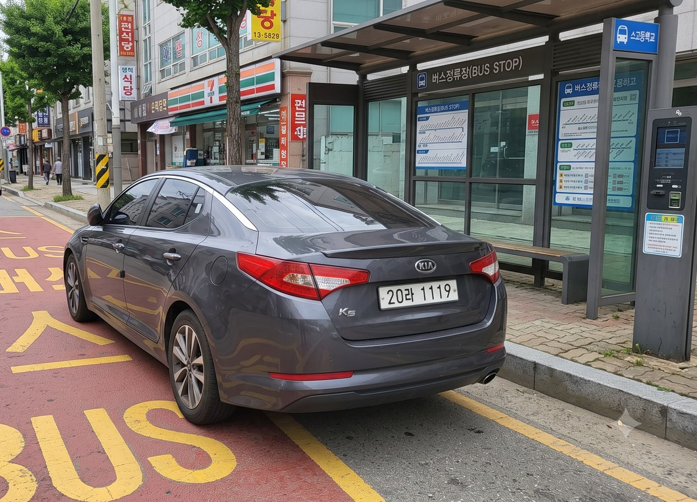
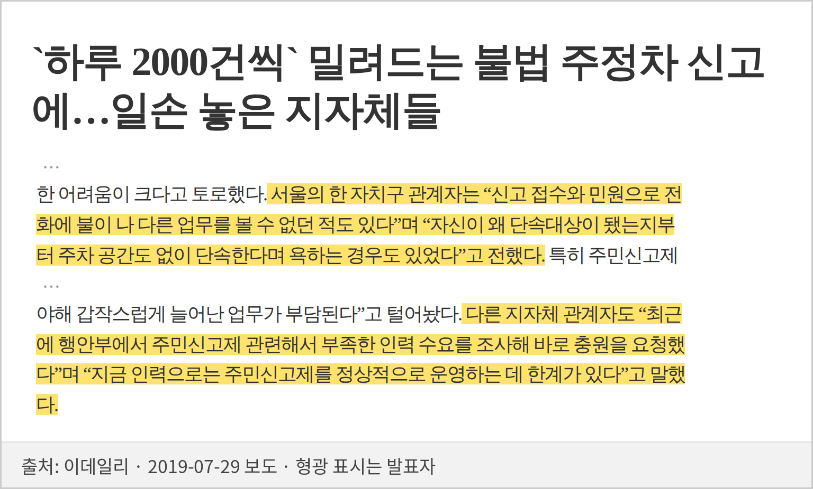
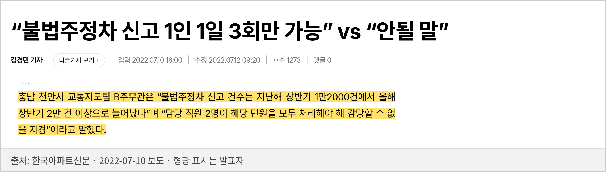
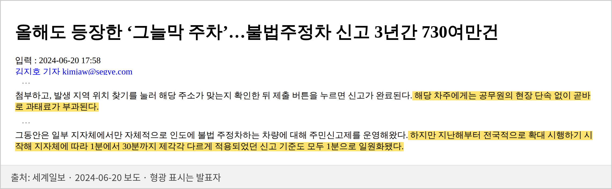
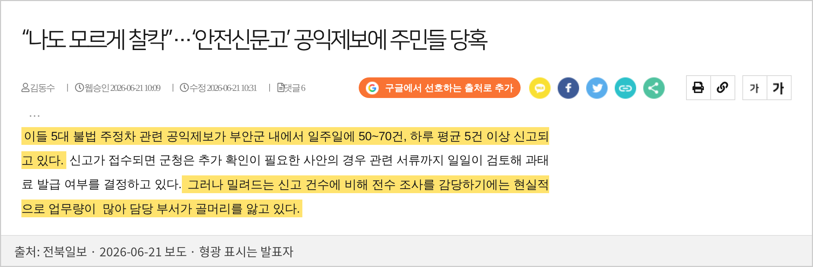

!유형을 골라야
카메라가 열림
!안 맞는 사진도
그대로 첨부
!60초 동안 촬영
화면이 안 열림
상위 3개 유형에 모인 언급
전체 455건 중 절반에 가까움
유형을 고르지 않아도
카메라가 바로 열림
왜 그렇게 판정했는지
설명할 수 있게
안 보이면 '없음'이 아니라
'모름'으로
앱을 켜면
바로 카메라
부족하면 이유 듣고
"횡단보도가 안 보여요"
유형·발생지역·번호판
둘이면 추천 보고 선택
자리를 떠도 0초에
소리·진동
같은 자리·같은 번호판
바로 확인
채워진 칸은
확인만

AI에 넘기지 않는 이유 — 휴대폰 위치는 수십 m 틀리고 공공데이터도 빠진 곳이 있습니다. 판정 근거는 사진, 공공데이터는 '일치' 표시와 안내
중간발표에서 받은 질문 — 현장 담당자에게 직접 물었습니다




시행 첫해부터 올해까지 같은 이야기 — 신고는 늘고, 일손은 모자랍니다
발생지역 담당 기관으로 넘어옴
두 사진 간격·같은 자리
번호판·촬영시각·위반 장소
지역 기준·단속 시간 대조
사유를 적고 통지
번호로 소유자 확인
10일 이상 의견 받기
위반자 의견 확인
서면으로 고지
신고인에게 문자 안내
부과 통지 후 60일
- 간격61초(기준 60초) 충족
- 같은 자리두 사진 겹침 92%(기준 50%) 충족
- 같은 차두 장에서 따로 읽은 번호 일치
- 위반 근거사진에 버스정류소 근거 보임
- 촬영시각사진에 표시(앱 카메라 촬영)
- 위치오차 약 6m
- 적용 기준전국 기준(6대 유형) · 접수 기한 충족
- 확인 필요없음
돌려보낸 2,148건 중 930건이
초록 여섯 사유 중 하나 이상에 걸림
여섯 사유를 그냥 더하면 44.8%
사유가 둘인 건을 한 번만 세면 43.3%
양주 단속 시간 반환 361건 중 351건(97%)이 양주시가 공공데이터에 올린 단속 시간(평일 09~18시·점심 11~14시 허용, 주말 10~18시) 밖
약 122만 건불수용 처리
약 468만 건수용(조치) 처리
안전신문고 월별 운영 현황 15개월을 한 해로 환산
① 요건 미달을 제출 전에 막으면 — 비중은 양주시 실측
막대 길이 = 한 해 불수용 122만 건 중 덜 들어오는 몫 · 줄무늬는 최대치
식 연 불수용 122만 × 요건 미달 비중(양주 43%, 단속 시간 안내 포함 최대 58%) × 앱이 거르는 비율 80% × 건당 처리 3분 ÷ 1,800시간 · 80%·3분·1분은 가정
요건 미달 비중은 양주시 원자료로 셈했고, 건당 처리 시간은 현업 담당자 인터뷰로 확인했습니다
쓰는 예산 · 한 해 AI 사용료
덜어 주는 일 · 돈으로 환산
남는 몫 · 한 해
채점한 사진
유형 정답률
틀린 번호판